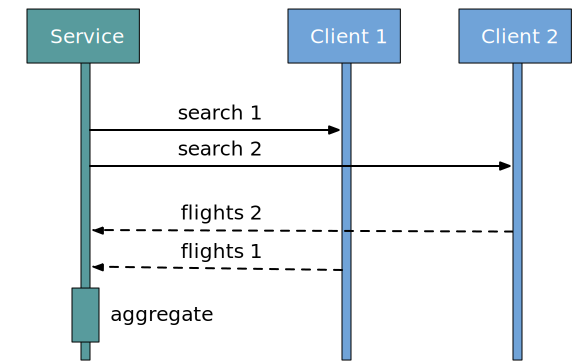
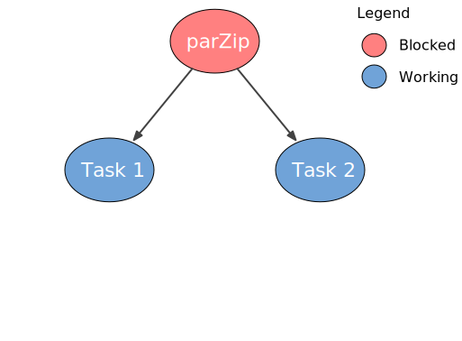
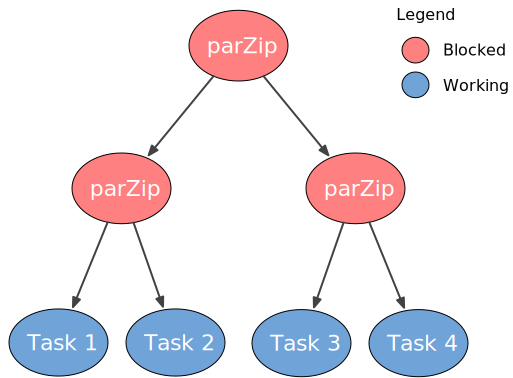
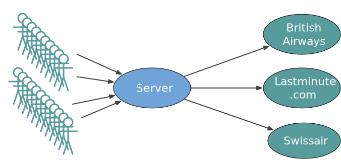
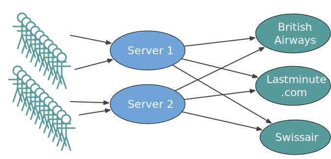

background-image: url(../img/fp-tower/website-background.svg) class: center, middle, white .title[Concurrent Actions] --- # For comprehension is sequential .fifty-two-left[ ```scala for { _ <- writeLine("What's your name?") name <- readLine _ <- writeLine(s"Your name is $name") } yield name ``` ] --- # For comprehension is sequential .fifty-two-left[ ```scala for { _ <- writeLine("What's your name?") `name` <- readLine _ <- writeLine(s"Your name is `$name`") } yield name ``` ] --- # FlatMap is sequential .fifty-two-left[ ```scala for { _ <- writeLine("What's your name?") name <- readLine _ <- writeLine(s"Your name is $name") } yield name ``` ] .fifty-two-left[ ```scala readLine.flatMap { `name` => writeLine(s"Your name is `$name`") } ``` ] --- # Can we detect if there are dependencies between IO? .fifty-two-left[ ```scala for { flights1 <- client1.search(from, to, date) flights2 <- client2.search(from, to, date) } yield SearchResult(flights1 ++ flights2) ``` ] -- <br><br><br><br><br><br><br> .forty-seven-left[ ```scala def upsertUser(user: User): IO[Unit] = for { _ <- db.deleteUser(user.id) _ <- db.insertUser(user) } yield () ``` ] .forty-seven-right[ ```scala def upsertUser(user: User): IO[Unit] = for { _ <- db.insertUser(user) _ <- db.deleteUser(user.id) } yield () ``` ] --- class: center, middle # What about Futures? --- class: medium-code # For comprehension is sequential (even for Futures) .eighty-two-left[ ```scala trait SearchFlightClient { def search(from: Airport, to: Airport, date: LocalDate): `Future`[List[Flight]] } ``` ] --- class: medium-code # For comprehension is sequential (even for Futures) .eighty-two-left[ ```scala trait SearchFlightClient { def search(from: Airport, to: Airport, date: LocalDate): Future[List[Flight]] } ``` ] .forty-seven-left[ <br><br><br><br> ```scala for { flights1 <- client1.search(from, to, date) flights2 <- client2.search(from, to, date) } yield SearchResult(flights1 ++ flights2) ``` ] .fifty-two-right[.center[ ]] --- class: medium-code # Concurrent Futures .eighty-two-left[ ```scala trait SearchFlightClient { def search(from: Airport, to: Airport, date: LocalDate): Future[List[Flight]] } ``` ] .forty-seven-left[ <br><br><br> ```scala val search1 = client1.search(from, to, date) val search2 = client2.search(from, to, date) for { flights1 <- search1 flights2 <- search2 } yield SearchResult(flights1 ++ flights2) ``` ] .fifty-two-right[.center[ ]] --- class: medium-code # Concurrent Futures .eighty-two-left[ ```scala trait SearchFlightClient { def search(from: Airport, to: Airport, date: LocalDate): Future[List[Flight]] } ``` ] .forty-seven-left[ <br><br><br> ```scala val search1 = client1.search(from, to, date) val search2 = client2.search(from, to, date) for { flights1 <- search1 flights2 <- search2 } yield SearchResult(flights1 ++ flights2) ``` ] .fifty-two-right[.center[  ]] --- class: medium-code # Concurrent IOs .seventy-seven-left[ ```scala trait IO[A] { // executes both "this" and "other" concurrently, // then combine their results into a tuple def parZip[Other](other: IO[Other])(ec: ExecutionContext): IO[(A, Other)] = ??? } ``` ] --- class: medium-code # Concurrent IOs .seventy-seven-left[ ```scala def parZip3[A1, A2, A3]( action1: IO[A1], action2: IO[A2], action3: IO[A3] )(ec: ExecutionContext): IO[(A1, A2, A3)] = ??? ``` ] --- class: medium-code # Concurrent IOs .seventy-seven-left[ ```scala def parZip3[A1, A2, A3]( action1: IO[A1], action2: IO[A2], action3: IO[A3] )(ec: ExecutionContext): IO[(A1, A2, A3)] = action1 // IO[A1] .parZip(action2)(ec) // IO[(A1, A2)] .parZip(action3)(ec) // IO[((A1, A2), A3)] .map { case ((a1, a2), a3) => (a1, a2, a3) } // IO[(A1, A2, A3)] ``` ] -- .seventy-seven-left[ ```scala def parSequence[A](actions: List[IO[A]])(ec: ExecutionContext): IO[List[A]] = ??? // fold + parZip ``` ] --- class: medium-code # Concurrent IOs .eighty-seven-left[ ```scala trait IO[A] { // executes both "this" and "other" concurrently, // then combine their results into a tuple def parZip[Other](other: IO[Other])(ec: ExecutionContext): IO[(A, Other)] = ??? } ``` ] --- class: medium-code # Concurrent IOs .eighty-seven-left[ ```scala trait IO[A] { // executes both "this" and "other" concurrently, // then combine their results into a tuple def parZip[Other](other: IO[Other])(ec: ExecutionContext): IO[(A, Other)] = IO { val future1 = Future { this.unsafeRun() }(ec) // Future[A] val future2 = Future { other.unsafeRun() }(ec) // Future[Other] ??? } } ``` ] --- class: medium-code # Concurrent IOs .eighty-seven-left[ ```scala trait IO[A] { // executes both "this" and "other" concurrently, // then combine their results into a tuple def parZip[Other](other: IO[Other])(ec: ExecutionContext): IO[(A, Other)] = IO { val future1 = Future { this.unsafeRun() }(ec) // Future[A] val future2 = Future { other.unsafeRun() }(ec) // Future[Other] val futureZip = for { // Future[(A, Other)] result1 <- future1 result2 <- future2 } yield (result1, result2) ??? } } ``` ] --- class: medium-code # Concurrent IOs .eighty-seven-left[ ```scala trait IO[A] { // executes both "this" and "other" concurrently, // then combine their results into a tuple def parZip[Other](other: IO[Other])(ec: ExecutionContext): IO[(A, Other)] = IO { val future1 = Future { this.unsafeRun() }(ec) // Future[A] val future2 = Future { other.unsafeRun() }(ec) // Future[Other] val futureZip = future1.zip(future2) // Future[(A, Other)] ??? } } ``` ] --- class: medium-code # Concurrent IOs .eighty-seven-left[ ```scala trait IO[A] { // executes both "this" and "other" concurrently, // then combine their results into a tuple def parZip[Other](other: IO[Other])(ec: ExecutionContext): IO[(A, Other)] = IO { val future1 = Future { this.unsafeRun() }(ec) // Future[A] val future2 = Future { other.unsafeRun() }(ec) // Future[Other] val futureZip = future1.zip(future2) // `Future[(A, Other)]` ??? : `(A, Other)` } } ``` ] --- class: medium-code # Concurrent IOs .seventy-seven-left[ ```scala trait IO[A] { // executes both "this" and "other" concurrently, // then combine their results into a tuple def parZip[Other](other: IO[Other])(ec: ExecutionContext): IO[(A, Other)] = IO { val future1 = Future { this.unsafeRun() }(ec) // Future[A] val future2 = Future { other.unsafeRun() }(ec) // Future[Other] val futureZip = future1.zip(future2) // Future[(A, Other)] Await.result(futureZip, Duration.Inf) // (A, Other) } } ``` ] --- background-image: url(../img/fp-tower/website-background-white.svg) class: middle, white ## package exercises.action.fp.concurrent # ConcurrentExample.scala --- class: medium-code # parZip is blocking .fifty-two-left[ ```scala trait IO[A] { // executes both "this" and "other" concurrently, // then combine their results into a tuple def parZip[Other](other: IO[Other]) (ec: ExecutionContext) = IO { val future1 = Future { this.unsafeRun() }(ec) val future2 = Future { other.unsafeRun() }(ec) val futureZip = future1.zip(future2) `Await.result`(futureZip, Duration.Inf) } } ``` ] .forty-two-right[  ] --- class: medium-code # parZip is blocking .fifty-two-left[ ```scala trait IO[A] { // executes both "this" and "other" concurrently, // then combine their results into a tuple def parZip[Other](other: IO[Other]) (ec: ExecutionContext) = IO { val future1 = Future { this.unsafeRun() }(ec) val future2 = Future { other.unsafeRun() }(ec) val futureZip = future1.zip(future2) `Await.result`(futureZip, Duration.Inf) } } ``` ] .forty-two-right[  ] --- # Blocking kills performance <br>  --- # Blocking kills performance <br>  --- class: middle, center # Can we make parZip non-blocking? --- class: medium-code # unsafeRun is blocking .fifty-two-left[ ```scala trait IO[A] { def unsafeRun(): A } ``` ```scala val ioUser = db.getUser(1234) // ioUser: IO[User] = IO$$anon$1@39ba5a14 val ioName = ioUser.map(_.name) // ioName: IO[String] = IO$$anon$1@39ba5c89 val name = ioName.unsafeRun() // name: String = Bob ``` ] --- # Future is non-blocking .sixty-two-left[ ```scala val futureUser = db.getUser(1234) // futureUser: Future[User] = Future(<not completed>) val futureName = futureUser.map(_.name) // futureName: Future[String] = Future(<not completed>) ``` ] -- .sixty-two-left[ ```scala trait Future[A] { def onComplete(callback: Try[A] => Unit): Unit } ``` ] -- .sixty-two-left[ ```scala futureName.onComplete { case Failure(error) => println("Something went wrong") case Success(name) => println(s"Username is name") } ``` ] --- class: medium-code # Non-blocking IO .fifty-two-left[ ```scala trait IO[A] { def onComplete(callback: Try[A] => Unit): Unit } ``` ] --- class: medium-code # Non-blocking IO .fifty-two-left[ ```scala trait IO[A] { // executes an IO `asyn`chronously def unsafeRunAsync(callback: Try[A] => Unit): Unit // executes an IO `sync`hronously def unsafeRun(): A } ``` ] --- class: medium-code <br><br> .forty-two-left[ # Direct Style ```scala def getUser(userId: Long): User ``` ```scala val user1 = getUser(1234) val user2 = getUser(5555) println(s"Users are $user1 and $user2") ``` ] .fifty-seven-right[ # Continuation Passing Style ```scala def getUser(userId: Long)(callback: User => Unit): Unit ``` ```scala getUser(1234) { user1 => getUser(555) { user2 => println(s"Users are $user1 and $user2") } } ``` ]